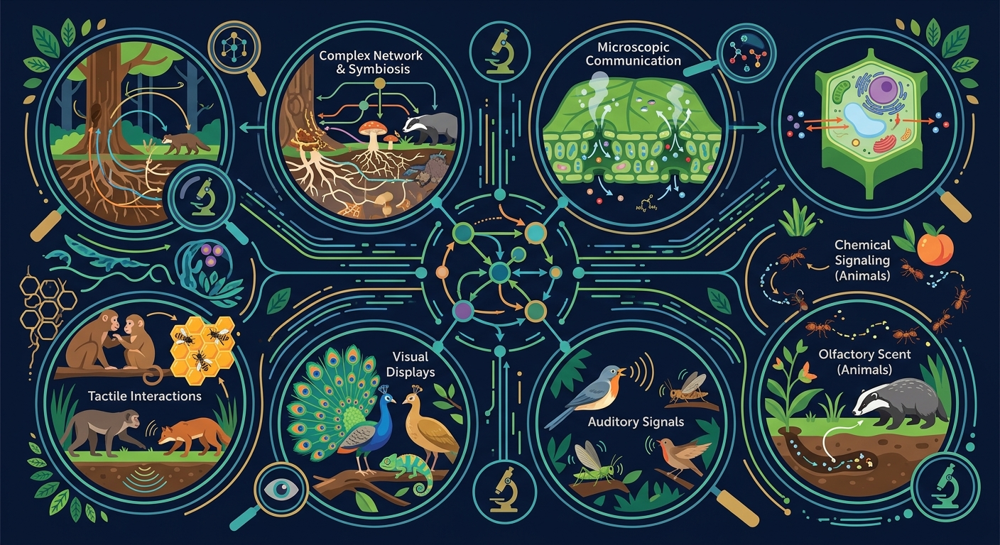
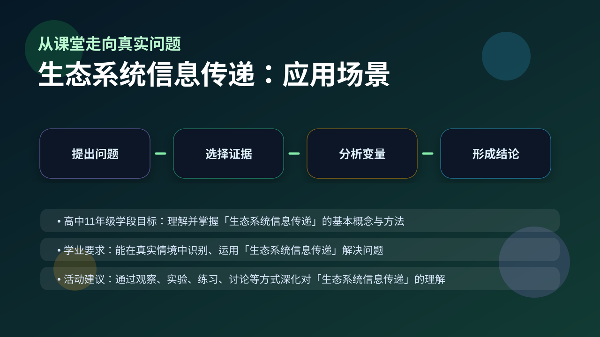

Gallery v1.0.0 · skill v7.14
生命系统怎样在种群、群落和生态系统层面保持动态平衡？

已经知道：此前已学习生态系统组成（生产者/消费者/分解者）和食物链能量流动，了解动植物通过声音（如鸟鸣）、颜色（如警戒色）进行简单交流
但问题是：学生常混淆物理信息（如萤火虫发光）与化学信息（蚂蚁信息素），且难以理解相同信息（如孔雀开屏）在不同情境下可能传递求偶或威慑的不同含义
所以学：当护林员通过安装红外相机（物理信息）和性诱剂（化学信息）监测野生动物时，需准确识别信息类型才能制定保护方案
先选一个卡点。后面的例子、互动和 AI 学伴都会围绕它给你最小提示。
选择或输入后，本课会围绕你的问题展开。
蜜蜂通过舞蹈指引同伴采蜜属于哪种信息传递？
现象入口：蜜蜂舞蹈、昆虫信息素、植物开花信号和动物警戒叫声都能影响生物行为。
机制解释：生态系统信息传递包括物理信息、化学信息和行为信息，能调节种间关系和生态系统稳定。
证据抓手：证据来自行为观察、信息素诱捕、遮光/声音实验和繁殖成功率变化。
变量线索：信息类型、接收者反应、传播距离和环境干扰。做题时先找变量，再判断机制，最后写证据。
观察蛾类释放性外激素吸引异性的现象
分析信息传递的三种类型：物理、化学、行为
说明性外激素属于化学信息，影响繁殖行为
应用信息传递原理设计害虫防治方案
情境：利用性引诱剂诱捕害虫，是利用化学信息干扰繁殖。
作答路径：现象：性引诱剂诱捕害虫→机制：人工合成性外激素（化学信息）干扰雌雄蛾识别→证据：诱捕器内雄蛾数量增加，田间卵块减少证明交配受阻。
评分提醒：典型失分：混淆信息载体与类型（如将声音归为行为信息），未明确信息作用对象（如仅写‘吸引’未说明是种内/间关系）。
用 PhET 观察环境压力如何改变种群中不同表型个体的比例，再讨论它和 生态系统信息传递 的关系。
💡 操作提示：改变环境、捕食者或突变条件，记录种群数量曲线，判断哪些变化是个体层面，哪些是种群层面。
蛾类性外激素从释放点向外扩散，浓度随距离指数衰减——这决定了诱捕器能覆盖的有效范围。
💡 探究任务：调扩散系数，估算信息素浓度减半的距离，解释为什么田间诱捕器要按一定密度布设。
把信息传递只理解成动物语言，忽略化学和物理信息。
只说“增加/减少”不够，要写清改变的是 信息类型、接收者反应、传播距离和环境干扰 中的哪一个。
没有实验现象、曲线趋势或结构证据，答案就像猜测。
下列哪项是物理信息的典型特征？
视频用语音和动态画面回顾本课主线：问题情境 → 机制模型 → 证据判断 → 迁移应用。

分析害虫防治、授粉和动物通讯，都要识别信息类型和作用对象。
提交后会检查你的解释是否包含现象、机制和变量。
如果学生只说出概念名称，继续追问：题干里哪个证据最关键？这个证据对应分子、细胞、个体还是生态系统层级？如果改变 信息类型、接收者反应、传播距离和环境干扰 中的一个条件，结果会怎样？这三问能把答案从背诵推进到科学解释。
列举三种物理信息的具体实例
分析孔雀开屏如何通过行为信息影响繁殖成功率
设计利用超声波（物理信息）驱赶果园害虫的方案
蜜蜂通过舞蹈指示蜜源方位，该过程主要涉及的信息类型是？
学习小结：生态系统通过物理信息（光/声）、化学信息（性外激素）和行为信息（求偶舞蹈）三类传递机制，调节种间关系并维持稳定，如干扰害虫交配的防治应用。
先独立作答，再点选项查看对错与错因。
蜜蜂通过舞蹈传递蜜源信息属于哪种信息传递方式？
下列哪种信息传递方式主要依赖化学物质？
在生态系统中，信息传递的主要作用是什么？
蜜蜂通过____传递蜜源的位置信息。
答案：舞蹈
蜜蜂通过特定的舞蹈动作传递蜜源的位置信息。
蚂蚁通过释放____来标记路径和传递信息。
答案：信息素
蚂蚁通过释放化学物质信息素来标记路径和传递信息。
下列哪项不属于生态系统中信息传递的方式？
选择一种生物，观察并记录其信息传递的方式，分析这种传递方式对其生存的意义。
❓ 为什么动物打架前要先对视几秒？
❓ 植物之间真的能'打电话'通风报信吗？
❓ 蜜蜂跳舞和微信发定位有啥区别？
学完这一课，这些问题你都能自信地回答。
✅ 画对比图：信息可双向传递且不衰减
💡 混淆物质循环/能量流动/信息传递三大功能
✅ 举例烟草植株遭受虫害时释放预警物质
💡 忽视植物的主动信息响应能力
口诀：光声化行四通道，你传我递稳平衡
类比：像班级微信群：文字是物理信息，表情包是行为信息，@全体成员是化学警报